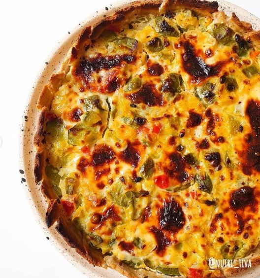

Como te ves arrancando la semana con una porción de esta tarta? 😍
Guardate ya mismo la receta ❗ así podes usar la misma masa y variar los rellenos 🙌 las veces que quieras 😍
Para la masa:
- 🔹️ 1/2 taza de harina común
- 🔹️ 1/2 taza de harina integra
- 🔹️ 1/4taza de agua aproximadamente (ir agregando de a poco para darnos cuenta si la masa necesita un poco más o un poco menos)
- 🔹️ 4 cdas de aceite
- 🔹️ Sal
- Para el relleno:
- 🔹️ 5 zapallitos
- 🔹️ 2 cebollas
- 🔹️ 1/2 morrón
- 🔹️ 1 zanahoria rallada o picada muy chiquita
- 🔹️ Ajo
- 🔹️ 2 huevos
- 🔹️ Queso por salut (2 cdas)
- 🔹️ Queso untable c/n
- 🔹️ Condimentos
- Te cuento como la hacemos...
- ➡️ Vamos a unir todos los ingredientes de la masa y dejar descansar en la heladera 15 minutos para que luego sea más fácil estirar.
- ➡️ La sacamos de la heladera y la estiraramos y forramos el molde de la tarta
- ➡️ Para el relleno vamos a saltear todos los vegetales.
- ➡️ Hacemos el ligue con el queso untable, el huevo y los condimientos para mezclarlo con las verduras salteadas.
- ➡️ Colocamos la mezcla en la base de la tarta y agregamos queso por salut por encima
- ➡️ Lo llevamos unos minutos al horno y listooo
Díganme si no los tente con esta receta 😍